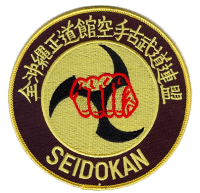
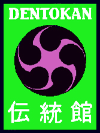

 Col. Roy "Jerry" Hobbs 
KOKUSAI DENTOKAN BUGEI RENMEI
General Information
Kokusai Dentokan Bugei Renmei (International Traditional House Martial Arts Federation): Founded in 1994 by Col Roy J. Hobbs as a means of providing instruction, and certification, in the various martial arts he has studied and practiced for over 40 years. The Dentokan is formally sanctioned by the Dai Nippon Seibukan Budo/Bugei Kai, Kyoto, Japan, and the Kokodo Ju-Jutsu Renmei, Omiya, Japan.
Mission: To preserve and teach the traditional martial arts of Japan (including Okinawa). To accomplish this in an environment free of intimidation, politics, and other distracters. We further seek to foster a spirit of fellowship and understanding, welcoming all like-minded individuals, regardless of race, gender, ethnic background, religion, or national origin.
Vision: Build healthy minds, bodies, and spirits through the study of traditional martial arts.
Arts Represented: Seidokan Karate Kobudo, Shorin-Ryu Karate-Do, Goju-Ryu Karate-Do, Okinawa Kobudo, Dentokan Aiki Ju-Jutsu, Ko-Ryu Kenpo, and Iai-Jutsu
COL. ROY JERRY HOBBS, USAF
Profile
Began Martial Arts in 1958
Occupation:
Career Military Officer
Education:
Postgraduate Certificate, Advanced Health Care
Administration, Interagency Institute for Federal Health Care Executives,
George Washington University
Master of Arts, Health Care Administration, Central
Michigan University
Master of Arts, Personnel Management, Central Michigan
University
Bachelor of Arts, History and Education, University of North Carolina at Wilmington
Significant Martial Arts Grades:
Judan Hanshi, Shorin-Ryu Karate-Do and
Kobudo,
Shorin-Ryu Karate-Do Seidokan Kyokai, Okinawa
Judan Hanshi and Menkyo Kaiden, Ju-Jutsu, Dai Nippon
Seibukan Budo Bugei Kai, Japan
Menkyo Kaiden, Kokodo
Ju-Jutsu, Kokodo Renmei, Japan
Hachidan Hanshi and Menkyo Kaiden, Ryoi Shinto Ryu
Ju-Jutsu, Ryoi Shinto Kai, U.K. and Ireland
Hachidan Hanshi, Goju-Ryu
Karate-Do, Dai Nippon
Seibukan Budo Bugei Kai, Japan
Hachidan Tasshi, Seidokan Karate
Kobudo, Zen Okinawa
Seidokan Karate Kobudo Renmei, Okinawa
Hachidan, Goju-Ryu Karate Kenpo, Okinawa Goju-Ryu Karate Kenpo Renmei, Okinawa
Hachidan, Seidokan Toide/Tuite, Zen Okinawa Seidokan Karate Kobudo Renmei, Okinawa
Godan Kyoshi, Iai-Jutsu, Dai Nippon Seibukan Budo Bugei Kai, Japan
Shihan Menkyo, Seidokan Kobu-Jutsu, Zen Okinawa Seidokan Karate Kobudo Renmei, Okinawa
Shihan Menkyo, Ryukyu Dento Karate-Do, Hamabaru Rensei Kai, Okinawa
Shihan Menkyo, Hakko-Ryu Ju-Jutsu, Hakko Juku Hombu, Japan
Advanced Instructor, Close-Quarter-Battle (Unarmed Combat, Knife Fighting, and Bayonet Fencing), Combat Training Team, U.K.
Martial Arts Leadership Positions:
President/Founder, Kokusai Dentokan Bugei Renmei (U.S.A., Europe, Middle East, Africa, and Asia)
Member, Board of Directors, Zen Okinawa Seidokan Karate Kobudo Renmei, Okinawa
Member, Executive Board, International Karate Kobudo Federation, U.S.A.
Member, Board of Directors, Gokenkan Budokai, U.S.A.
Member, Executive Board, International Seidokan Motobu-Ryu Rengokai, U.S.A.
Advisor, Kobushi Multimedia, U.S.A.